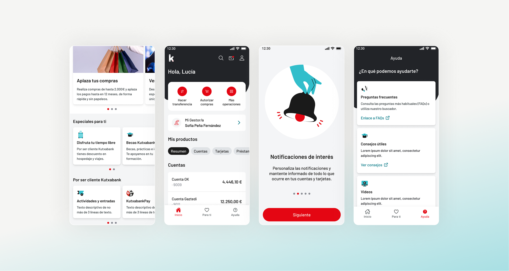
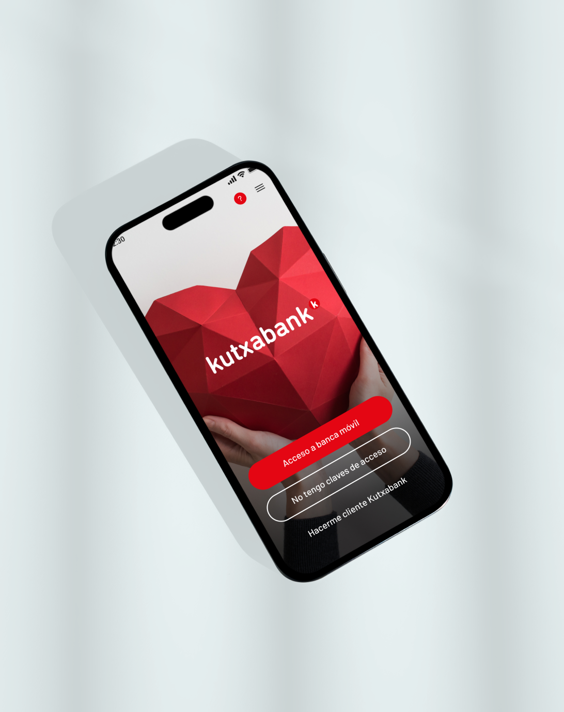
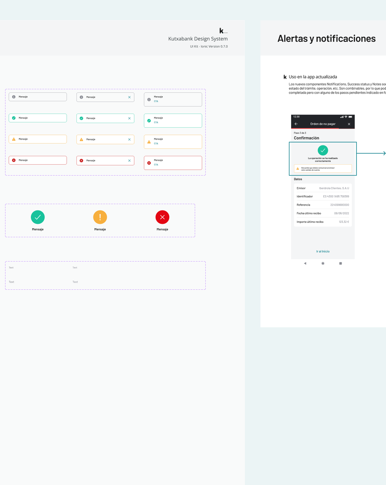
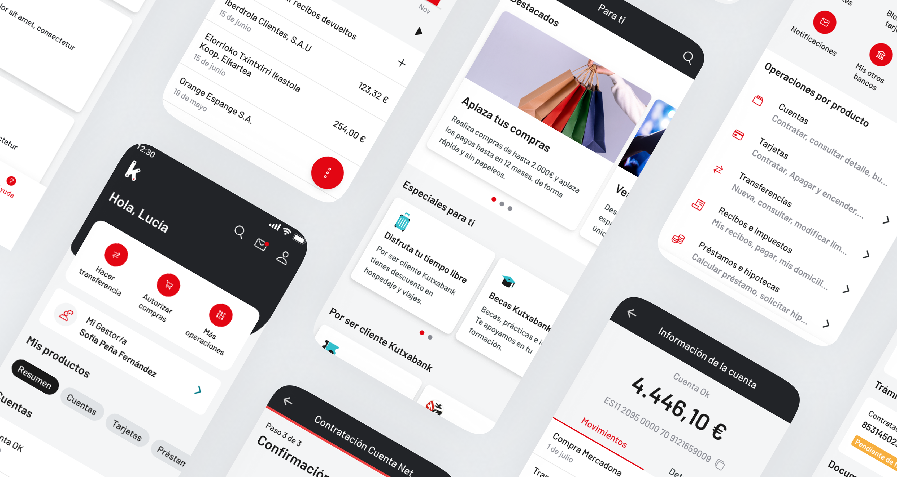

Kutxabank App
- Branding
- Identity Design
- Design Systems
- UX/UI Design
Un rediseño que fue más allá de la estética. El objetivo era hacer la app de Kutxabank más clara, accesible y fácil de usar, construyendo un sistema de diseño escalable que el equipo del cliente pudiera mantener y evolucionar de forma independiente.

Como parte del equipo de rediseño 2023-24, contribuí a transformar la app de Kutxabank en una experiencia más intuitiva y accesible. Mi enfoque fue más allá de las actualizaciones visuales: trabajé en los fundamentos del sistema de diseño, documentándolo de forma que su adopción fuera sencilla para el equipo interno del cliente, garantizando consistencia y escalabilidad a largo plazo en todo el producto.


El sistema de diseño abarcó tipografía, paleta de color, componentes modulares, tokens y patrones de interacción, todo estructurado para soportar la evolución futura del producto. Además de las entregas, lideré sesiones prácticas para formar al equipo del cliente en el uso y mantenimiento del sistema, reduciendo la dependencia y capacitándoles para desarrollarlo con el tiempo. También diseñé ilustraciones personalizadas y prototipos testeables que dieron a la app una identidad visual distintiva.

La app rediseñada de Kutxabank se lanzó en septiembre de 2024 con muy buenos resultados. Ver un producto llegar a millones de usuarios — con un sistema construido para durar — es lo que hace que este tipo de proyectos sean significativos. La combinación de bases sólidas, documentación clara y capacitación del equipo significó que el trabajo no terminó en la entrega: le dio al cliente todo lo necesario para seguir construyendo con confianza.
